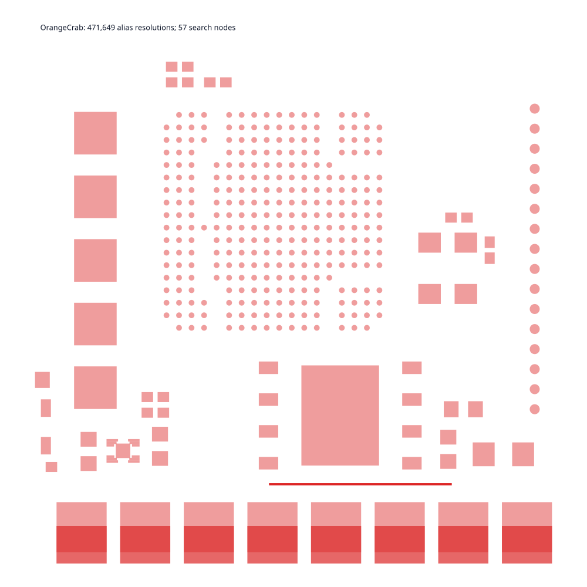
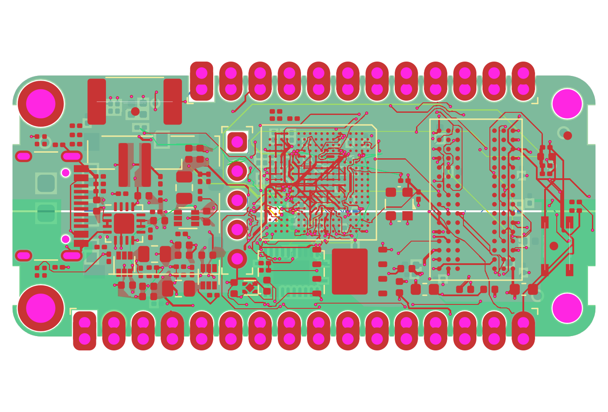

Measured fix
The completed OrangeCrab CPU profile places 323.4 seconds in joint DRC and 21.0 seconds in repeated connectivity lookups. Its 1,592 obstacles carry 479,296 aliases. Connectivity has already joined each obstacle’s nonempty aliases, so the existing clearance search now resolves one representative. Empty aliases retain their previous behavior.
The native repro drops from 471,649 to 1,590 alias resolutions: 99.7% fewer. The path and all 57 search nodes remain identical. The full repair library passes 192 tests; the new regression compares 84 searches with the unchanged synchronous implementation.
| Measurement | Before | After | Time reduction |
|---|---|---|---|
| 25 native searches · median of 7 alternating trials | 0.736 s | 0.074 s | +89.9% |
| Complete OrangeCrab first phase · two runs per revision | 489.181 s | 473.037 s | +3.3% |
| Joint DRC within those complete phases | 310.033 s | 292.764 s | +5.6% |
| Dataset 18 mean | 36.354 s | 36.180 s | +0.5% |
| Dataset 18 P50 | 26.677 s | 26.605 s | +0.3% |
| Dataset 18 P95 | 96.663 s | 95.426 s | +1.3% |
| Complete iCE/Pi first phase · one matched pair | 458.941 s | 451.315 s | +1.7% |
Native search trials alternate order on one Blacksmith worker after warmup. Complete phases run before→after and after→before on one worker; all four emit the same 430-trace hash. Dataset 18 alternates adjacent sample order and retains 16/16 clean outputs with identical SVG hashes and via counts.

Real routed before / after
The full OrangeCrab output shown here remains incomplete. The completed first phase retains identical copper, including 430 traces and 271 vias; it still has 683 physical findings. The benefit is time saved in clearance preparation.
